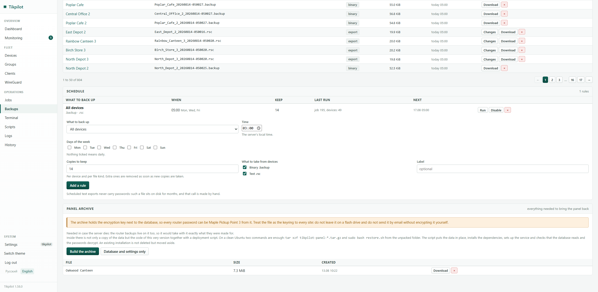

Automatic MikroTik config backups
A copy of the configuration is not needed when the router burns out. It is needed when somebody changed something a week ago and nobody can say what. What to capture, how often, how long to keep it, and how to find the change afterwards.
Binary or export
Not a choice, two different tools.
| Binary (.backup) | Export (.rsc) | |
|---|---|---|
| What is inside | A snapshot of the whole system: passwords, keys, certificates | The text of the commands that recreate the configuration |
| Human readable | No | Yes |
| Diffable line by line | No | Yes |
| Portable to another model | No, same model and usually the same version | Yes, with edits for different interface names |
| Passwords inside | Always | No, unless you pass show-sensitive |
| When it saves you | The box is dead and you need an identical one, fast | You need to know what changed, or to rebuild a site |
The conclusion is simple: take both. Binary to restore, export to understand. On its own each covers half the cases.
How often, and how long to keep
Daily, at night, keeping two weeks. The reasoning is that a broken configuration is not noticed immediately: a week is the usual gap between "someone edited a firewall rule" and "why is the till not printing". With only yesterday's copy there is nothing to go back to.
Space is a non-issue. A text export of a router is tens of kilobytes, a binary copy one or two hundred. For fifty sites, fourteen daily copies is on the order of a hundred megabytes.
Where to keep them
Not on the router. A copy sitting on the flash of the same box is useless in exactly the case it was taken for. After downloading, the panel deletes the files from the device by default, so as not to fill up a disk that was small to begin with.
And not only on the panel's server. If it dies, everything goes at once: the copies and the history. That is why the panel also archives itself, with the database, the settings and the encryption key, and that archive belongs somewhere else. The key matters most: without it the device passwords in the database cannot be decrypted.
How the panel does it
- A schedule rule: what to capture (the whole fleet, a group, or the panel itself), at what time, on which days, and how many recent copies to keep. Defaults are 03:00 and fourteen copies.
- Both formats at once, binary and text, each as its own file.
- A backup password is part of the rule. Empty means no encryption, and that is a deliberate choice rather than an oversight.
- Old copies are pruned by count, not by age, so a site that was down for a month does not end up with no copies at all.
- A diff between any two configs of one site, line by line: what was added and what disappeared.
- Full-text search across every stored config. It answers "where is that old server address still configured" and "which sites have this rule".
{kind=link}

Taken from a live fleet of 49 routers; names and addresses are replaced by the panel itself.
The check everyone skips
A backup nobody has tried to restore is not a backup, it is a hope. Once a quarter, take the copy of a random site and restore it onto a spare box of the same model. You will also find out that a binary from 7.14 does not load on 7.21, and that half your sites take their copies at three in the morning, exactly when the provider pulls the link for maintenance.
The panel shows the age of the latest copy per site and raises the ones older than a week, or missing entirely, into the needs-attention block. That does not replace a restore test, but it covers the more common failure: copies stopped being taken and nobody noticed.
git clone https://github.com/maximdr86/tikpilot
cd tikpilot && cp .env.example .env
docker compose up -dFrequently asked
Can I get away with exports only?
You can, but rebuilding a site after the hardware dies will take an evening instead of ten minutes, and certificates will have to be reissued.
Should the copies be encrypted?
If the server holding them is reachable by anyone but you, yes: a binary copy contains Wi-Fi passwords and router accounts.
What about a site that is almost always offline?
Nothing special. The rule runs next time the site is up, and the panel shows that the copy is old.
What about passwords in the text export?
By default they are not there. The show-sensitive option
exists, but turn it on only understanding that the file is a secret from
then on.